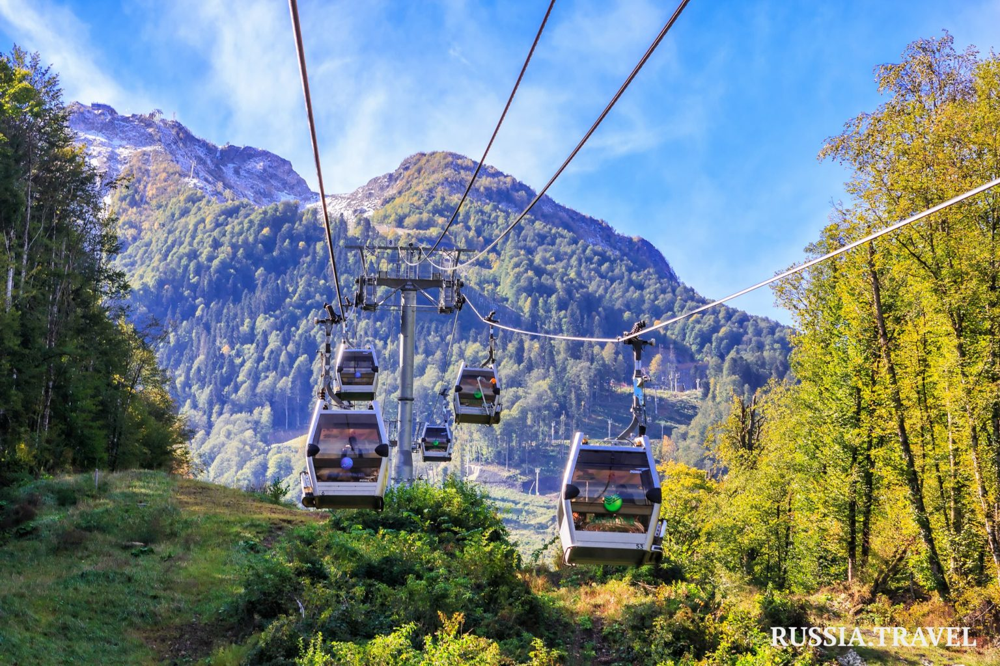
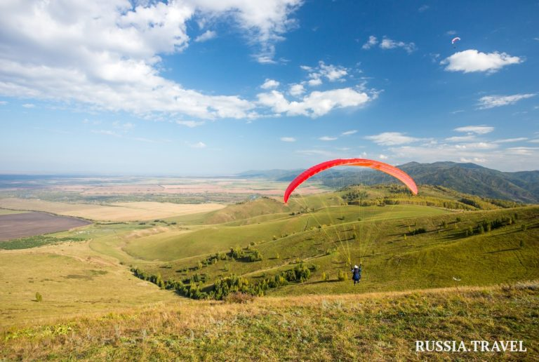
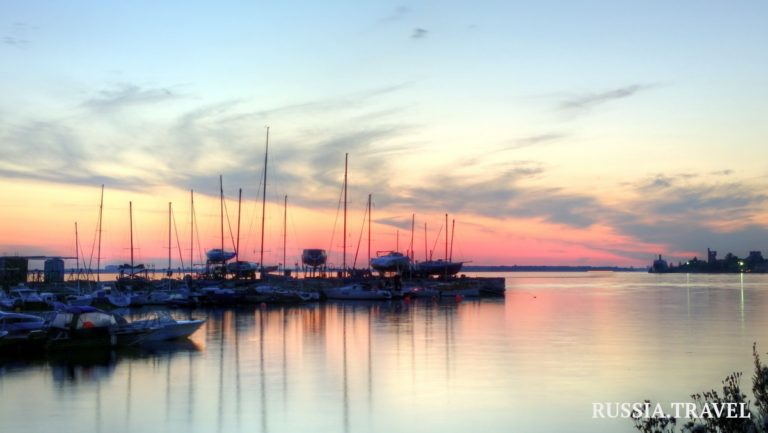

Отдыхайте с нами!
Море, солнце, горы, реки и озера — так обычно начинают свой рассказ о Краснодарском крае. После Олимпиады 2014 года для главного курорта России началась новая эра. Сюда стремятся, чтобы пощекотать нервы в Скайпарке AJ Hackett Sochi в 200 метрах над землей. Зимой здесь так же многолюдно, как и летом, ведь в Краснодарский край съезжаются тысячи любителей горнолыжного отдыха. А если одного моря мало, то на полуострове Тамань можно побывать сразу на двух — Черном и Азовском.
Многие регионы мечтают о собственном теплом море. В Краснодарском крае их сразу два: Черное и Азовское. Один из городов края носит звание третьей, летней столицы России. Ну и на контрасте — на Кубани расположен всемирно известный горнолыжный центр Красная поляна.
Не гадаем: основная масса отдыхающих летом стремится к морю, а зимой — в горы. Кубань, пожалуй, одно из лучших мест для горного отдыха в России — от горнолыжного до оздоровительного. Причем это очень компактный курорт: большинство туристических объектов находится недалеко друг от друга.
Более того, этот регион получает бонусы от приятного соседства. Поездку на день-два к Дону на рыбалку, в Абхазию за сочными фруктами, в красивейшую горную Адыгею или в Крым здесь организовать очень и очень легко.
Наследие Олимпиады 2014 года и сейчас активно используется. В Олимпийском парке можно отдохнуть на аттракционах «Сочи Парка», где особенно выделяются американские горки. Захватывающее времяпрепровождение. На стадионе «Фишт» проводятся соревнования по футболу. В зависимости от сезона здесь же можно посетить хоккейный матч местного клуба. Тут располагаются и автомобильный музей с редкими экземплярами, музей СССР и множество разных площадок в музейном комплексе. В целом на территории парка можно провести и день, и два, и более.
Из Краснодара и Сочи — на электричке «Ласточка». Можно и на автомобиле, но это сложнее из-за сезонных пробок.
Вход в «Сочи Парк» (зона с аттракционами) — от 650 рублей. Детям до 4 лет — бесплатно. Вход на спортивные мероприятия и объекты — от 300 рублей.
Пожалуй, это самый модный горнолыжный курорт в России на данный момент. Более 900 тысяч туристов в сезон посещает эти места, миллионная отметка будет преодолена совсем скоро. Это играет на руку любителям горного отдыха: благодаря такому количеству людей сервис и доступность услуг достигли очень высокого уровня.
Около половины горнолыжных трасс — для начинающих, что привлекает к катанию на лыжах или на доске любого желающего. Есть трассы и посерьезней, для опытных лыжников и профессионалов, не говоря о фрирайде. Всего тут расположено более 60 горнолыжных трасс. Хватит всем.
На «Ласточке». Стоимость билета — от 400 рублей.
Стоимость ски-пассов на горнолыжных трассах разная: от 855 рублей за детский и 1600 за взрослый до 21 000 рублей за годовой абонемент. Тут же, недалеко, находится и SkyParkс экстремальными аттракционами. Вход стоит от 500 до 13 200 рублей.
Здесь построены настоящие дома и дворы — как в настоящей станице. Примерить форму казака, выпить квасу, послушать казачьи песни и взмахнуть настоящей боевой шашкой — все это доступно в «Атамани». Тут же проводятся экскурсии, ремесленные мастер-классы и казачьи обряды.
Многие гости этого места отмечают: станица наполнена таким уютом, что хочется остаться жить в одной из казачьих хат. Вы можете посетить спектакль «Вэчэр близэнько», концерт ансамбля «Атаманочка» или поучаствовать в обряде сватовства в «Кутке невесты».
Комплекс находится в станице Тамань, на месте высадки переселенцев из Запорожской Сечи. Здесь и началась история Кубани. Добраться можно на автомобиле примерно за 3 часа от Краснодара. Также сюда едут автобусы и маршрутные такси практически из любого крупного населенного пункта края в районе Анапы и Темрюка. Езжайте в направлении Крымского моста, там совсем рядом.
Входной билет — от 100 рублей, а участие в обрядах и концертная программа — до 2000 рублей. Развлечения и отдых тут практически на любой кошелек.
Одно из самых красивых мест для фотографирования во всем Краснодарском крае. Находится недалеко от Анапы, главная достопримечательность — болотные кипарисы, которые растут прямо в воде озера. Как появились тут кипарисы, доподлинно не известно. Эти деревья, как правило, произрастают в Северной Америке, но и на Кубани они неплохо прижились, радуя глаз туристов и местных жителей. Тут же рядом расположен «Рыцарский замок». Выглядит очень «инстаграмно».
Если попроще, то на автомобиле. От Анапы едете в поселок Сукко, а там ищете улицу Советскую, и по ней — почти до конца, до указателя на озеро. Общественный транспорт тоже имеется — это вариант посложнее. Спросите, как добраться до озера, и на всем протяжении пути от Анапы вам подскажут, на чем ехать (или даже довезут).
К озеру от Анапы доедете, как правило, за 500 рублей на такси и за 50 рублей — на автобусе. Если отправитесь на личном транспорте, то за проезд к озеру с вас возьмут 500 рублей за машину.
В Алтайском крае каждый путешественник найдет занятие по вкусу: для археолога – древние стоянки и пещеры, для гурмана – алтайский сыр и алтайский мёд, для любителя курортного отдыха – озеро Яровое и курорт Белокуриха. Тех, кто ищет единения с природой, ждут уютные турбазы, расположенные в окружении заснеженных гор и вековых сосен, и чистый таежный воздух.
Алтайский край — неотъемлемая часть огромной «страны» в центре Евразии. Здесь степной Алтай превращается в тот самый заповедный горный регион, где, по преданию, находится мифическая Шамбала.
Туристы едут сюда, чтобы надышаться чистейшим воздухом, пройти по таежным тропам, полюбоваться цветущим маральником.
Приехать можно в любое время года. Вопреки стереотипам климат юга Сибири — мягкий. Средняя температура зимой минус 10–15° С. В январе морозы доходят до минус 30 градусов, но длятся они недолго.В июне-июле +30° С.
Летом: загорать, купаться, ходить в пешие и конные походы, сплавляться по рекам. Зимой: кататься на лыжах и коньках, осваивать зимнюю рыбалку, окунуться в ледяную купель после бани.
Хотите побыть поближе к природе? Тогда поселитесь в одном из сельских гостевых домов. Попробуйте натуральные фермерские продукты, попейте чай с целебными травами, купите в подарок знаменитый алтайский сыр и мед.
В Алтайский край также приезжают, чтобы поправить здоровье. Особенно востребованы целебные соленые озера, термальные источники и пантовые ванны.
Самый популярный курорт края. В «долине здоровья» находятся знаменитые еще с советских времен здравницы: «Белокуриха», «Россия», «Сибирь», «Катунь»,курортный отель «Беловодье».
Санатории используют для лечения природную минеральную воду, радон, озерные грязи, голубую глину. Местные старожилы говорят: природа лечит все болезни. Им можно верить — в Сибири много долгожителей.
Зимой на курорте действует горнолыжная трасса. Общая протяженность всех спусков — около 7 км. Действуют пять бугельных подъемников и канатно-кресельная дорога (работает круглый год, стоимость билета — 400 рублей).
Самый комфортный тип проживания и сервис по типу «все включено» — это санатории. Цены на проживание начинаются от 2500 рублей (с человека). Если хотите получить курс лечения, советуем заранее проконсультироваться у врача. Собственно, от перечня процедур и будет зависеть конечная цена курса оздоровления.
Если вы хотите сэкономить на жилье, в Белокурихе можно найти много бюджетных вариантов: мини-гостиницы, гостевые дома, апартаменты и т. п.
На озеро туристы едут в основном летом, их привлекает соленая вода и целебные иловые грязи. Из-за лечебных свойств озеро вполне оправданно сравнивают с Мертвым морем.
Яровое — это небольшой промышленный городок. В нем много магазинов и кафе. В высокий сезон гостей развлекают гастролями приезжие артисты.
Если вам нужно полечиться, советуем купить путевку в санаторий «Химик». Стоимость зависит от уровня проживания: от стандартного номера до апартаментов.
Другой вариант — остановиться в гостевых домах или арендовать квартиру. Цены начинаются от 500 рублей (с человека).
Одно из немногих мест, где можно увидеть, как ведутся археологические раскопки. В Денисовой пещере были найдены останки древних людей, живших здесь сотни тысяч лет назад. По результатам исследований ученые сделали предположение, что homo altaiensis (человек алтайский) — особая ветвь в эволюции человечества. Это произвело сенсацию в научном мире.
Рядом с пещерой организован лагерь археологов. Сотрудники лагеря проводят познавательные экскурсии для гостей. В местном кафе очень вкусная кухня.
Недалеко от лагеря, в соседних селах работают несколько летних турбаз.
Туркомплекс «Искра»(находится в селе Солонешном, у подножия скалы на берегу реки Ануй). Усадьба «Алтын-Тура»(находится в селе Черный Ануй).
Сростки — родина знаменитого актера, писателя, режиссера Василия Шукшина. На горе Пикет сооружен памятник в его честь, открыт мемориальный музей-заповедник. Здесь ежегодно проходит Всероссийский фестиваль «Шукшинские дни на Алтае».
Вам хватит пары часов, чтобы осмотреть музей, прогуляться по селу и подняться на Пикет. В Сростках нет смысла останавливаться на ночлег.
Обязательно попробуйте домашнюю еду в уличных кафе. Особенно ценятся пирожки с различными начинками, беляши и блинчики. В уличных магазинах продают мед, травы, кедровые шишки, медовуху и многое другое.
В Архангельской области множество удивительных и особенных мест: полноводные реки и чистейшие озера, чарующие северные леса и суровое Белое море, затерянные в снегах поморские деревни, старинные храмы и величественные монастыри, выдающиеся памятники русского деревянного зодчества с затейливыми резными узорами.
Арктические территории начинаются на берегах Белого моря, где и раскинулся Архангельск. Это — легендарное Поморье. Здесь уже любуются полярным сиянием, восхищаются мощной стихией весеннего ледохода. Город Архангельск был заложен в устье реки Северная Двина Петром I. Традиции морского судостроения продолжают верфи Северодвинска, где создается атомный подводный флот страны.
Лучшее время посетить Архангельск — период белых ночей (со второй половины мая до конца июля) или снежные месяцы. Настоящая зима тут длится дольше календарной — с ноября по март.
В Архангельской области множество удивительных и особенных мест: полноводные реки и чистейшие озера, чарующие северные леса и суровое Белое море, затерянные в снегах поморские деревни, старинные храмы и величественные монастыри, выдающиеся памятники русского деревянного зодчества с затейливыми резными узорами.
Погулять в Архангельске по местному «Арбату» — пешеходной зоне, которую называют Чумаровка, выйти на широкую набережную, сделать фото на фоне массивных стен первого российского форта. Если повезет с капризной северной погодой, то загляните на пляж. Искупаться в реке, которая впадает в Белое море — это удел отважных людей! На набережной можно найти частника и прокатиться на яхте на один из островов.
Соловецкий архипелаг в Онежском заливе Белого моря традиционно называют Жемчужиной Беломорья, от него до условной линии полярного круга рукой подать.
На Соловки едут, чтобы увидеть Соловецкий монастырь, основанный в XV веке православными старцами, поклониться святым мощам и могилам безвестных мучеников. Если у вас достаточно времени, погуляйте по Валунной дамбе. Этот каменный мост соединяет острова Большой Соловецкий и Большая Муксалма. Он был построен монахами в XIXвеке. Самый уединенный остров архипелага называется Анзер. Там находятся скиты монахов-затворников. Экскурсия по острову займет целый день.
Помимо богатой, порой трагической истории Соловки привлекают своей первозданной природой. Посмотреть ее лучше всего с воды. Возьмите напрокат лодку и отправляйтесь в путешествие по малому или большому кругу обширной озеро-канальной системы. Этот поход вы запомните на всю жизнь: заповедную северную природу лучше всего постигать именно так, без суеты и толп туристов.
Дешевле всего добираться до Соловецких островов по морю. Теплоходы идут от причалов Кеми и Беломорска. Обычно сезон начинается 1 июня, а заканчивается 20 сентября. В зависимости от погоды даты могут меняться.
До Кеми можно добраться на машине по трассе Р-21 или на поездах мурманского направления. Из Москвы ехать сутки. Плацкартный билет стоит от 2000 рублей. Поезд из Санкт-Петербурга идет 13–15 часов.
Белые ночи и северное сияние
Зимой в Архангельской области довольно часто можно наблюдать сполохи северного сияния. Полярные сияния — явление круглогодичное. Для его наблюдения в соответствующую фазу солнечной активности требуется только темное время суток и безоблачное небо. Период северных сияний в Архангельской области начинается уже в августе, когда ночи становятся достаточно темными, и длится до марта. Опять же, самый лучший способ увидеть разноцветные сполохи во всей красе — с борта теплохода или катера.
Музей деревянного зодчества и народной культуры, расположенный на высоком берегу Северной Двины всего в получасе езды от центра Архангельска.
В «Малых Корелах» собраны самые яркие образцы традиционной северной архитектуры, представляющие «деревянную цивилизацию» всей Архангельской области. Здесь разместились «деревеньки» Каргопольско-Онежского, Двинского, Пинежского и Мезенского секторов с избами, амбарами, колодцами и изгородями. В «Малых Корелах» вы увидите исполинский механизм ветряной мельницы-шатровки, огромные дома-дворы зажиточных каргопольских крестьян, интерьер двинского трактира, холмогорскую кузницу, дом рыбака и избушку промысловика-охотника.
Пинежские пещеры — одна из самых известных и загадочных достопримечательностей Архангельской области. Созданные подземными водами залы, причудливые изгибы карстовых коридоров, исчезающие озера и ручьи, таинственно поблескивающие в прохладной темноте ледяные кристаллы привлекают туристов и зимой, и летом.
Спуститься под землю здесь можно только в составе экскурсионной группы. Туристов снабжают касками и налобными фонариками. А вот о теплой одежде и удобной обуви стоит позаботиться самостоятельно — даже летом температура в провале редко поднимается выше нуля, а лед и покрытые инеем стены могут встретить уже при входе.
Наиболее эффектно пещеры выглядят в период с января по март — искрящиеся инеем своды, фактурные карстовые изгибы и затейливые наледи ежегодно создают новый неповторимый интерьер подземного царства Пинеги.
Каргополь– «медвежий край» или «воронье поле» — один из древнейших торговых городов Русского Севера, ровесник Москвы, расположен неподалеку от озера Лаче, на левом берегу реки Онеги. Городской ландшафт Каргополя определяют прекрасные образцы русского белокаменного зодчества. Церковь Рождества Богородицы и Благовещенская церковь являются подлинными шедеврами каргопольского каменного узорочья. На Соборной площади расположен старейший храм города — Христорождественский собор. Возле него, у шестидесятиметровой колокольни, проходят традиционные праздники — фестиваль колокольного искусства «Хрустальные звоны».
Самым известным ремесленным брендом города сегодня является расписная глиняная игрушка.